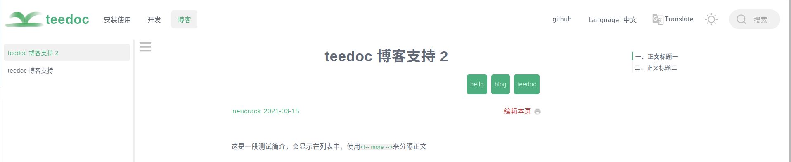
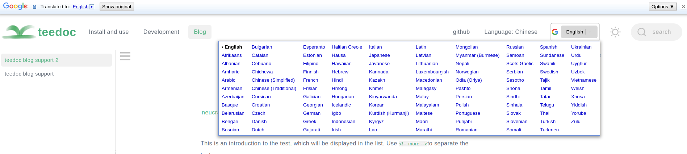
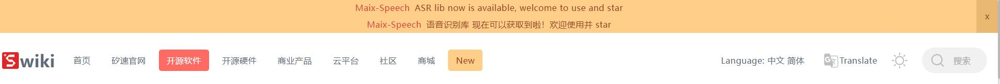
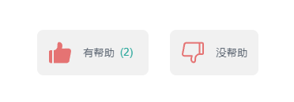

teedoc other plugins
teedoc-plugin-markdown-parser: default markdown parsing plugin
Configure the plugin in site_config.json
"plugins": {
"teedoc-plugin-markdown-parser":{
"from": "pypi",
"config": {
"parse_files": ["md"],
"mermaid": true,
"mermaid_use_cdn": false,
"mermaid_cdn_url": "https://cdn.jsdelivr.net/npm/mermaid/dist/mermaid.min.js",
"mathjax": {
"enable": true,
"file_name": "tex-mml-chtml",
"config": {
"loader": {
"load": ["output/svg"]
},
"tex": {
"inlineMath": [["$", "$"], ["\\(", "\\)"]]
},
"svg": {
"fontCache": "global"
}
}
}
}
}
}
parse_files: File formats involved in parsingmermaid: Enable mermaid pluginmermaid_use_cdn: Use CDN for mermaidmermaid_cdn_url: CDN url for mermaid, only used whenmermaid_use_cdnistruemathjax: Mathematical formula rendering supportenable: Whether to enablefile_name:jsfile name, which defines the default functions, the default istex-mml-chtml, [reference here](http://docs.mathjax.org/en/latest/web/components/ index.html)config:mathjaxconfiguration, mathjax configuration, see [here](http://docs.mathjax.org/en/latest for specific configuration items /web/configuration.html)
teedoc-plugin-jupyter-notebook-parser: jupyter notebook parsing plugin
Configure the plugin in site_config.json
"plugins": {
"teedoc-plugin-jupyter-notebook-parser":{
"from": "pypi",
"config": {
}
}
}
teedoc-plugin-search: Website search plugin
Let the website and documents support the search function, support the searched current document and the whole site search
To use, add to the plugins keyword in site_config.json:
"plugins": {
"teedoc-plugin-search":{
"from": "pypi",
"config": {
"search_hint": "Search",
"env": {
"main_color": "#4caf7d",
"main_color_dark": "#1b4c33",
"hint_shadow_color": "rgba(76, 175, 125, 0.38)"
}
}
}
}
The prompt content of different documents can be configured in the corresponding document config.json to facilitate multi-language support (internationalization/i18n). Of course, the plugin supports Chinese, English and Japanese by default, the translation is here, when it is not found by default, English will be used. Manually setting the following variables will overwrite the translation that comes with the plug-in
The supported configurations are as follows:
"teedoc-plugin-search":{
"config": {
"search_hint": "Search",
"input_hint": "Enter keywords, separate multiple keywords with spaces",
"loading_hint": "Loading, please wait...",
"download_err_hint": "Failed to download the file, please refresh and try again or check the network",
"other_docs_result_hint": "Results from other documents",
"curr_doc_result_hint": "Current document search result"
}
}
search_hint: the prompt message of the search box (button), the default isSearchinput_hint: input hint information in the search box of the search page, defaultKeywords separated by spaceloading_hint: Load the file prompt for searching, the default isLoading, wait please ...download_err_hint: The download of the file required for the search fails, the user needs to refresh the browser to try again or the network environment cannot download the file, the default isDownload error, please check network and refresh againother_docs_result_hint: search result hint, search result in other documents, defaultResult from other docscurr_doc_result_hint: search result hint, the search result in the currently browsed document, defaultResult from current docenv: Replace some colors, includingmain_color: main color, default"#4caf7d"main_color_dark: main color of black theme, default"#1b4c33"hint_shadow_color: shadow color, defaultrgba(76, 175, 125, 0.38)
teedoc-plugin-baidu-tongji: Baidu Analytics
Add the code of Baidu Analytics on each page, send the visit information to Baidu, and you can see the visit statistics in the background
After registering and logging in to Baidu Statistics, add a website on the management page, and then there will be a code acquisition page with the following code
<script>
var _hmt = _hmt || [];
(function() {
var hm = document.createElement("script");
hm.src = "https://hm.baidu.com/hm.js?90c693aa2************c14a50bb49";
var s = document.getElementsByTagName("script")[0];
s.parentNode.insertBefore(hm, s);
})();
</script>
Here is a string of keys 90c693aa2************c14a50bb49, copy this string of keys, and then add to the plugins keyword in site_config.json:
"plugins": {
"teedoc-plugin-baidu-tongji":{
"from": "pypi",
"config": {
"code": "Fill in the access key here"
}
}
}
After the website is deployed, you can see the visit information on the real-time visitor page of the Baidu statistics background
teedoc-plugin-google-analytics: Google Analytics
Add the code of Google Analytics on each page, send the visit information to Google, and you can see the visit statistics in the background
After registering and logging in to Google Analytics, add a website on the management page, and then there will be an ID starting with UA- or G-, such as UA-123456789-1 or G-AABBCCDDJJOOKK
Then add in the plugins keyword in site_config.json:
"plugins": {
"teedoc-plugin-google-analytics":{
"from": "pypi",
"config": {
"id": "Fill in the resource ID here"
}
}
}
teedoc-plugin-comments-gitalk: gitalk comment plugin
gitalk is a comment tool based on the github issue question and answer system. Using gitalk, you don’t need to build your own server, you only need to register a github account , All the data will be put on the issue of a repository of github.
If you encounter a problem, here may have the answer you want
Config github
Go to github developers settings,
- Add one Oauth Apps
- Then generate secrets, we got client ID and secrets
- Fill in
Homepage URLwith url, e.g.https://teedoc.github.io - Fill in
Authorization callback URLwithhttps://teedoc.github.io/
Config doc
To use it, you need to add a plug-in in the site_config file
"teedoc-plugin-gitalk": {
"from": "pypi",
"config": {
"contrainer": "comments-container",
"env": {
"clientID": "********",
"clientSecret": "********",
"repo": "repo name",
"owner": "orgnization name or user name",
"admin": ["user names have write access"]
}
}
}
contrainer: The container tagidthat contains the comments, the default iscomments-container, the document page and blog page in theteedoc-plugin-theme-defaultplugin contain this tagenv:gitalkjs plugin configuration items, see here for more parameters.clientIDandclientSecret: You need to create a new application in github application to getIDandSecretrepoandowner: are the name and owner of the repository, for example, github.com/teedoc/teedoc.github.io is used hereissueas a comment system, just fill inteedoc.github.ioandteedocadmin: is the name of the user who has write access to this repositoryadminAutoCreate: Automatically create issue when first time administrator visit page or notmain_color: the main appearance color of comments, optionalsecond_color: the secondary appearance color of comments, optional
To open a comment on each page, the administrator needs to log in to Now issue can be created automaticallygitalk to access the page, gitalk will automatically create an issue, and add the label Gitalk and the label url path, (the path characters are 50 characters in length limit). Of course, there are also methods for batch creation, which are not introduced here, and you can explore it yourself.
You can also manually create issue and specify the label Gitalk of issue (the first letter is capitalized), and then add another label page url path or custom id (the label is custom id then Need to set the page id on the page using this issue)
In addition to setting the env parameter in site_config, it can also be set in the article's metadata. Add a gitalk- prefix in front of the setting. For example, to set the title of the issue generated by gitalk, just You can set gitalk-title. Here are a few examples:
- If you create an issue manually, you can specify the issue for a page, and specify the issue number in the metadata for the article
---
title: *****
gitalk-number: 2
---
- Or create an issue manually first, specify the use of the specific label issue on the page, you can take a look at official example
---
title: *****
id: Demo
---
or
---
title: *****
gitalk-id: Demo
---
teedoc-plugin-assets: assets add plugin
You can freely add resources to the page through this plug-in, such as css and js resource files
For example, the path mapping of resource files has been added, and there are two files /static/css/custom.css and /static/css/custom.js, which need to be added to the head and tail of the page respectively.
At the same time, I also hope to add a meta tag to the head
site_config.json:
{
"route": {
"assets": {
"/static/": "static",
},
},
"plugins": {
"teedoc-plugin-assets":{
"from": "pypi",
"config": {
"header_items": [
"/static/css/custom.css",
"<meta name=\"plugin-assets\" content=\"example meta item\">"
],
"footer_items": [
"/static/css/custom.js"
],
"env":{
"main_color": "#000000"
}
}
},
}
}
For css and js files, you can write url directly like this, or you can write a link at the beginning of http.
Here the variables in env will be replaced in the resource file, and used in the resource file by ${variable name}
custom.css:
a {
color: ${main_color}
}
teedoc-plugin-google-translate: Google page translation plugin
The function is the same as that of the right mouse button of Chrome to translate this page
Before translation:

After translation:

"config": {
"lang": "auto",
"doc_types": ["page", "doc", "blog"],
"domain": "/"
}
lang: The language of the page that needs to be translated. By default, it is not recommended to set it, or set it to the samelocaleof the document. For example, iflocaleiszh_CN, this can be set tozh-CNdoc_types: Which types of document pages should be displayed, 0 to 3 of["page", "doc", "blog"],domain: From which URL to download the source code ofgoogle translate, the default is"/", which means to download from this website, it can also be set totranslate.google.comortranslate.google.cn
Mainly considering that some files cannot be downloaded without a proxy in China, it is actually necessary to request
translate.googleapis.com. When making the plug-in, I found that even if it is set totranslate.google.cn, there is aThe jsfile requested acleardot.giffile under the domain name ofgoogle.com, which caused the network request to be stuck for a long time until it timed out to load the translation, so thejsfile (element_main.js) was modified and Put it locally so that it can be accessed quickly.
But this is also risky. Because the code and the code of the
teedoc-plugin-ad-hint: Global tips for advertisements or important news
Effect:

use:
Add plugin in site_config
"plugins": {
"teedoc-plugin-ad-hint": {
"from": "pypi",
"config": {
"type": "hint",
"label": "☆",
"content": "content",
"show_after_s": 432000
}
}
}
Configuration: The default configuration code is here
type: default"hint", currently only supportshintlabel: By default"New", a label will be automatically added to the navigation bar, click to display the top prompt content, here set the content displayed by the labelcontent: default"", content, the content of thehintcategory will be displayed at the topshow_times: default2, set how many times the user visits the page, the prompt will not be displayed automatically, if the value is<= 0, it will always be displayedshow_after_s: default432000, set the time to be automatically displayed next time, the unit is seconds, the default is5daysdate: defaultnull, hint message's update date time, if hint content is updated, set this to make hint auto show, format:2021-11-07 14:23:00, if date set>now time, the hint will always auto showcolor: default"#a0421d", font colorlink_color: default"#e53935", link (<a>tag) font colorlink_bg_color: default"#e6ae5c", link (<a>tag) background colorbg_color: default"#ffcf89", background colorcolor_hover: default"white", the font color when hovering the mousebg_color_hover: default"#f57c00", the background color when the mouse is hoveringclose_color: default"#eab971", close button background color
i18n
If the document has multiple languages, you can configure the plugin in site_config:
"plugins": {
"teedoc-plugin-ad-hint": {
"from": "pypi",
"config": {
"type": "hint",
"label": "☆",
"content": "content",
"show_after_s": 432000
}
}
}
Then overwrite the settings in the document config in different languages
"plugins": {
"teedoc-plugin-ad-hint": {
"config": {
"label": "🦀",
"content": "Content, support html syntax, do not use English single quotes",
}
}
}
Try to use the same config template file for documents in the same language. In the specific document config, import makes it easier to configure
teedoc-plugin-thumbs-up: thumbs up plugin
With this plugin, you can display the like button on the page, and you can count the number of likes. The effect is as follows

Basic usage
Add the plugin in site_config:
"plugins": {
"teedoc-plugin-thumbs-up": {
"from": "pypi",
"config": {
"url": "https://xxxx.xxxx.com:80",
"show_up_count": true,
"show_down_count": false
}
}
}
It should be noted that because the web page is a purely static page, the use of this plug-in needs to be used with the server, and the statistical information is stored on the server.
The server uses the pip install teedoc-plugin-thumbs-up command to install the plugin and then use the teedoc-thumbs-up-server command to run the service. You can use the --port parameter to specify the port, and more parameters use teedoc' -thumbs-up-server --helpView
It is recommended to proxy this service with a proxy server such as nginx.
In addition, if your website is https protocol, then this service also needs to be https service, you can apply for a free certificate and configure it with nginx
It should be noted that this service is just a simple routine and does not fully guarantee the security of the service. It is recommended to read the server code carefully to modify and customize your own server script. Code: [teedoc-plugin-thumbs-up/server](https ://github.com/teedoc/teedoc/tree/main/plugins/teedoc-plugin-thumbs-up/server)
i18n
Like other plugins, override the settings in the document config in different languages. For parameters, see [Plugin Source Default Configuration](https://github.com/teedoc/teedoc/blob/a8b93a4f29330b018c2e38589786b33d00854309/plugins/teedoc-plugin-thumbs- up/teedoc_plugin_thumbs_up/init.py#L24)
"plugins": {
"teedoc-plugin-thumbs-up": {
"config": {
"label_up": "Helpful",
"label_down": "Not helpful",
"msg_already_voted": "You have already voted",
"msg_thanks": "Thanks for your feedback",
"msg_down_prompt": "Thanks for the feedback, please tell us where we can improve? (minimum 10 words)",
"msg_down_prompt_error": "Message requires a minimum of 10 words and a maximum of 256 words",
"msg_error": "There was an error requesting the server!"
}
}
}